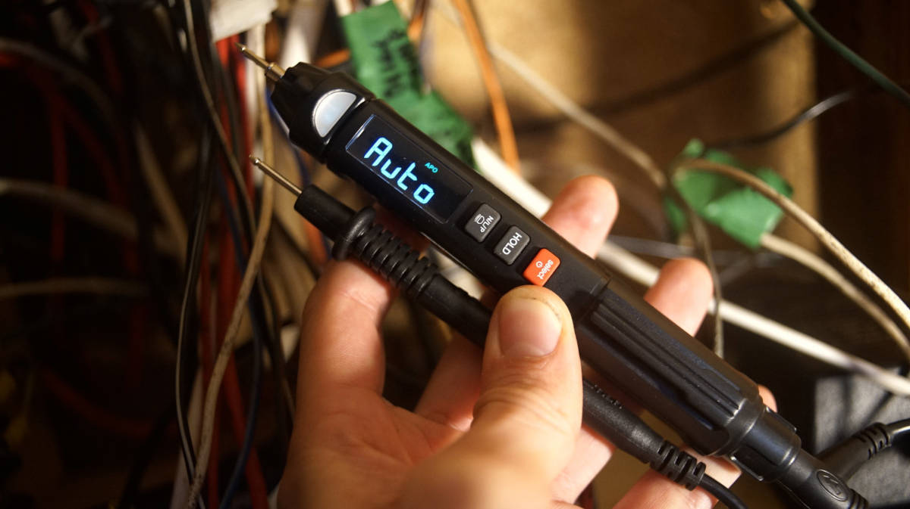

electrical refit
22.11.29
Victoria, BC. Canada.

Re-wiring Pino has been on our minds since we bought it in 2016, there are a lot of dead wires in the walls, and lot of components have fallen prey to corrosion. Pino looks well-ordered when standing inside the cabin, but a peek behind the walls and ceiling panels reveals a rat's nest of wiring. Many wires are bound together by electrical tape, some of those 'braids' are so thick that extracting a single wire is impossible. The worst braids run through parts of the boat we have no access to, and no matter how much we pull (either direction) it will not budge.
I(Rek) had my head in the ceiling, while Devine was at the breaker panel, each of us trying to remove what little of the electrical tape we could reach. After many hours of tugging, cutting and cursing, we successfully extracted one of the wires tucked inside the braid of death. The wire was sticky all over, meaning that the braid running inside the wall was completely covered in tape. Removing the first wire was the hardest, after that the braid began to thin enough that we could pull it all out. This revealed two distinct braids of wire, taped together? We couldn't believe it.

Prior to making the decision to redo Pino's wiring, we had some issues with the cabin lights (drawing way too much power despite being LEDS). The main cabin light wires were tangled in the death braid, and when we removed all of the tape we found some pretty botched connections.

One of the previous owners spliced a light into the existing system, tinned the wires together and wrapped it an infinity of electrical tape - no wonder we were having issues with our lights. A lot of the wiring has corrosion.

The first step was to disconnect the wires from the breaker panels. We labelled each wire, both pos and neg.
Our breaker panels are from 1982, and still use fuses. We plan to change that because we're not certain that this design adheres to ABYC standards (tinned wires). ABYC (E-11.16.3.7), “Solder shall not be the sole means of mechanical connection in any circuit." Good connections ought to be mechanically connected, not soldered.
List of connection don'ts
- Never solder wires together
- Never twist wires together
- Never connect wires together with household "wire nuts"
- Never wrap a bare wire around a terminal screw to connect wires together
List of connection do's
- After crimping, always do a pull test(to make sure it won't come apart)
- Always cover crimped connections with heat-actived, adhesive-lined heat shrink tubing

Overtime, we removed and added a lot of systems onboard. Before we buy a breaker panel, we have to figure out how many switches we need (we counted 16 on the DC 12v side).
Panel 1
- Solar charger
- Bilge pump switch
- VHF
- LPG
- USB outlets
- Stereo
- Inverter (??)
- Main cabin lights (head fan?)
Panel 2
- Radar
- Chartplotter
- Depth Sounder
- Anchor light
- Steaming light
- AIS
- Sailing instruments
- Running lights (front + back, and compass light)
Things we want in our new system:
A way to monitor the draw on the batteries (monitor), to combine certain systems on the same breaker with separate switches (lights and fans mainly), a way to charge both banks with the solar, and a more convenient setup for the inverter.
More soon...